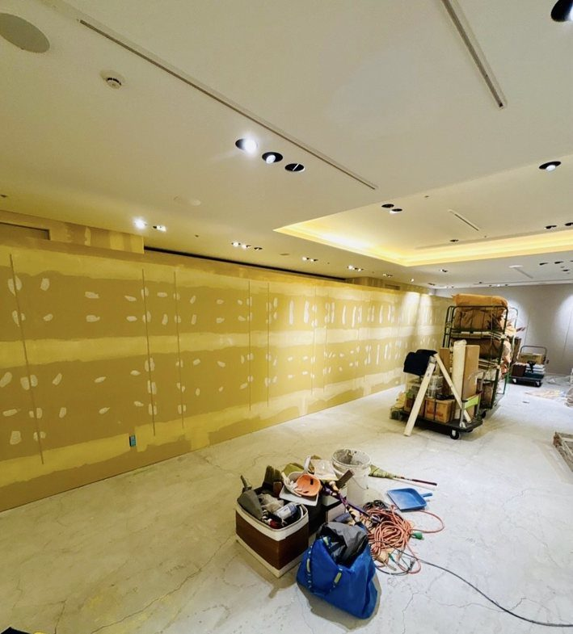
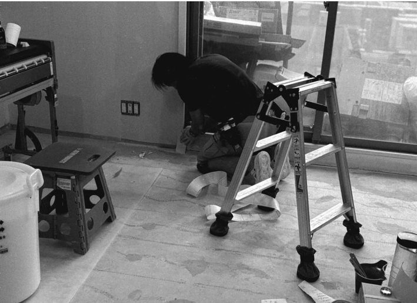
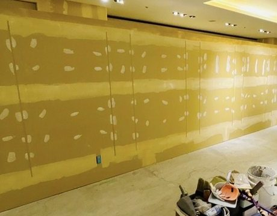
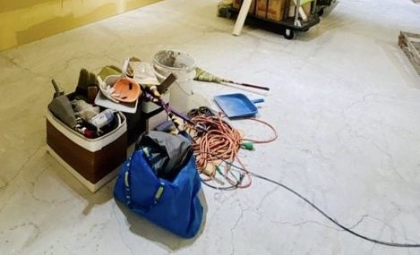
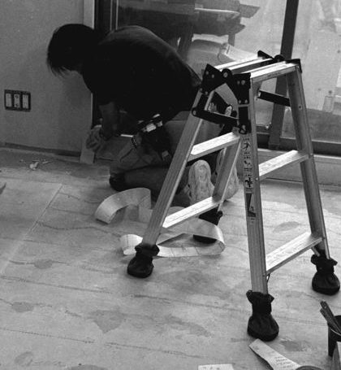
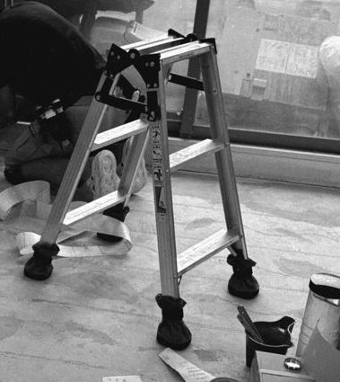

01 / Prepare
整える。
見えなくなる前の工程に、いちばん差が出る。下準備・養生・段取りを、丁寧に。
- Keyword
- Precision
- Value
- 仕上がりの土台

02 / Works
施工事例。完成した空間だけでなく、下地や作業の途中も、仕事の一部として見せます。【仮】写真と説明は試作用です
1 / 4
見えなくなる下地の精度が、完成後の面の美しさを左右します。【仮】

段取り、手つき、道具の置き方。現場の静かな緊張感までが仕事です。【仮】

同じ図面でも、納まりの判断ひとつで仕上がりは変わります。【仮】

完成写真がそろい次第、ここに追加します。【仮】
03 / Process
01 / Prepare
見えなくなる前の工程に、いちばん差が出る。下準備・養生・段取りを、丁寧に。

02 / Install
クロス、大工、造作、仕上げ。職種が違っても、良い仕事には共通した静かな緊張感があります。
03 / Finish
見た目の美しさと、長く使える丈夫さ。その両方を、細部の積み重ねでつくります。

04 / Connect
318 は一社で完結する会社ではなく、職人のネットワーク。案件ごとに、合う技術と人をつなぎます。
04 / Crew
318 に集まる職種の紹介です。メンバー個人の紹介は、掲載が確定してから追加します。
1 / 4
クロス・床など、空間の印象を決める最後の工程。【仮】
空間の骨格と納まりをつくる仕事。【仮】
商業空間から住まいまで、現場に合わせてチームを組みます。【仮】
一緒に仕事をする職人の募集方法は、準備が整い次第ご案内します。
For Partners
現場を支える、技術でつながる。
工務店、設計事務所、施工会社の皆さまへ。318は、独立して活動する職人の技術と施工実績を紹介する取り組みです。専門分野や仕事の進め方を知っていただき、現場で必要な協力関係につなげることを目指しています。
Column
工務店・設計事務所・施工管理の方に向けた、施工の実務についての記事です。
コラムの一覧へ
準備中コラムは、内容が確認でき次第ここに掲載します。
News
新しい施工事例や活動など、318 からのお知らせです。
お知らせの一覧へ
準備中お知らせは、内容が確認でき次第ここに掲載します。
05 / About
318 INSTALLER CLIQUE は、独立した職人たちのネットワークです。
一人ひとりが自分の技術と名前で仕事をする職人が、案件ごとに集まり、チームとして現場に入ります。
大切にしているのは、完成した姿だけではありません。下地を整える精度、現場での判断、次の工程への段取り。見えなくなる部分まで、ひとつの仕事として向き合います。
Contact
施工協力のご相談、住宅・店舗工事について。
受付準備中：受付の方法が決まるまで、送信はできません。